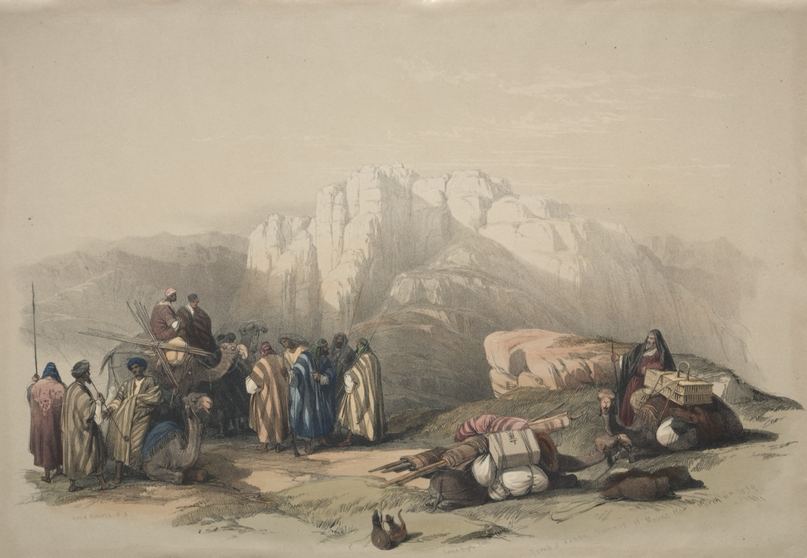

Numbers 20 — The Mister Translation

⚠ The mountain the chapter ends on — or the one pilgrims have been shown for centuries, which is not the same claim. Roberts drew this on his 1839 tour, and the summit in the distance carries the white-domed Muslim shrine to Aaron, Jebel Nebi Harun, above Petra. ⚠ Two honest cautions. The Cleveland Museum catalogues the plate as ‘Summit of Mount HOREB’, and Horeb is the other name for Sinai — a different mountain entirely from Mount Hor, and a good illustration of how easily these names slide together. And the identification itself is disputed: Numbers puts Mount Hor on the border of Edom, while this peak sits well inside it, which is why many scholars prefer a site on the Edom–Negev frontier instead. What the picture reliably shows is the country — bare banded sandstone, no water, and a caravan that has to stop where the ground lets it.
{kind=link}
Numbers 20:1-6 — Miriam gets one clause, and nine verses later Moses calls the people by the letters of her name
Thirty-eight years pass between v1 and the verse before it, and the text does not mention them. Numbers 19 was law with no narrative; here the story restarts in 'the first month' of an unnamed year, at Kadesh, and the wilderness generation is nearly gone. ⚠ Miriam — prophet, sister, the one who stood watch over the basket and led the singing at the sea — is buried in eleven Hebrew words: and Miriam died there, and was buried there. No mourning is recorded. Aaron will get thirty days at the end of this chapter (v29) and Moses will get thirty in Deuteronomy; she gets a clause. The versions all keep it as flat as the Hebrew does, which is right, and the Douay-Rheims calls her by the Latin form of the name a reader may not expect: 'And MARY died there', as do RV60 and RV 1909 with «María». It is the same name.
⚠ And here is something no translation can show. Miriam is Miryam, spelled mem-resh-yod-mem. At v10 Moses turns on the people and calls them ha-morim, 'you rebels' — spelled he-mem-resh-yod-mem. Take away the definite article and the two words are letter for letter the same. The vowels differ (Mir-yam against ha-Mo-rim) and the roots are almost certainly unrelated — morim is from marah, to rebel, while Miriam's name is disputed and may not be Hebrew at all. But an Israelite hearing this chapter read aloud has just heard Miriam buried, and nine verses later hears her brother shout four of the same letters at the congregation. ⚠ The chapter then closes the loop at v24, where God uses the root back at Moses: because you REBELLED, meritem, same root as morim. Moses names them rebels; God names him one.
The complaint is a quotation. Lu gavanu bigva acheinu — if only we had PERISHED when our brothers perished. The verb is gava, and the people used it three chapters ago in exactly this mood: Numbers 17:27-28's hen gavanu, avadnu, look, we perish, we are lost. ⚠ It is worth following to the end of this chapter, because v29 uses it one last time and not of them: and the whole congregation saw that Aaron had PERISHED. They open by wishing the death their brothers got; they close by watching their priest get it.
⚠ V2's verb has a history in this book. Vayyiqqahalu al — they ASSEMBLED against Moses and Aaron, from qahal, which is the verb Korah used when he assembled the congregation against them at 16:19, and which Numbers 17:7 used of the crowd doing it again by itself. This is the third time. The root runs seven times through this chapter, and God will use it back at Moses in v8: ASSEMBLE the congregation — the same verb, now an instruction rather than a mutiny.
Numbers 20:7-13 — a different rock from Exodus 17, and the opposite instruction: speak, not strike
⚠ This is the second time Israel has no water and Moses gets it out of a rock, and almost everything about the two episodes is deliberately different — starting with the noun. Exodus 17:6 (already on these pages) uses tzur, and God's instruction there is you shall STRIKE the tzur. Numbers 20 uses sela, a crag or rock-face, and God's instruction here is SPEAK to the sela. Two different rocks, two different words, and the verbs are swapped. Moses does at the second rock what he was told to do at the first. ⚠ Of the ten versions checked on both shelves, NWT 1984 is the only one that lets a reader see it: it prints 'the crag' here and 'the rock' at Exodus 17:6, so the two episodes are visibly not about the same object. KJV, ASV, NIV, TLB, Geneva and the Douay-Rheims all print 'rock' in both places, and RV60, RV 1909 and NVI use «peña» or «roca». This translation prints 'crag', which is strange enough to be worth a note and is exactly why it is here.
And the rod is not just any rod. V9: Moses took the rod from BEFORE JEHOVAH — which is where Numbers 17:25 put Aaron's budded staff, 'before the testimony, to be kept as a sign for the sons of rebellion.' The rod that proved the priesthood by producing life is taken out and used to hit something. ⚠ TLB is the only version on either shelf that says so outright, rendering v8 'Get AARON'S ROD' — an interpretation rather than a translation, and a defensible one. Every other version keeps the Hebrew's bare 'the rod' / 'the staff', which leaves the identification to the reader who remembers where it was kept.
⚠ What Moses actually says is the problem, and it is one pronoun. Ha-min ha-sela ha-zeh notzi lakhem mayim — are WE to bring out water for you from this crag? Not 'will God', not 'will Jehovah': notzi, first person plural. And then he strikes, twice, which nobody asked him to do. The whole shelf keeps the 'we' and the 'twice' — all ten versions checked have both — so this is one place where nothing is lost in translation and the difficulty is simply in the text. ⚠ The Douay-Rheims alone adds a second insult to v10, reading 'Hear, ye rebellious and INCREDULOUS', importing the unbelief of v12 into Moses' own mouth before God has named it.
⚠ The sentence in v12 turns on a pun the place-name has been carrying since v1. They are at KADESH. The charge is that they failed l'haqdisheni — to treat me as HOLY, from qadash, the same three consonants as the name of the town. And v13 finishes it: and he was SANCTIFIED among them, vayyiqqadesh, the same root again. The root occurs six times in this chapter — four as the place-name (vv1, 14, 16, 22) and twice as the verb (vv12, 13) — and the shape of it is that God gets at Kadesh, by judging, the holiness that Moses failed to give him there. No version can carry that, because 'Kadesh' is a name in English and 'sanctify' is a verb.
Meribah, and this is the second one. V13 names the place from rib, to quarrel, the verb used of the people back in v3. ⚠ But Exodus 17:7 (already on these pages) already named a Massah-and-Meribah, at the other rock, thirty-eight years earlier — which is why later books have to call this one 'Meribath-Kadesh' to tell them apart. The shelf splits on whether to leave the name alone: KJV, ASV, NWT 1984, NIV, Geneva and NVI keep Meribah; the Douay-Rheims translates it as 'the Water of CONTRADICTION' and RV60 and RV 1909 as «las aguas de la RENCILLA», the waters of the quarrel. ⚠ And TLB keeps the name and glosses it wrongly: 'Meribah (meaning “Rebel Waters”)'. Meribah is from rib, to quarrel, not from marah, to rebel. It is the wrong root — though, as v10 and v24 show, it is the wrong root in a chapter that happens to be full of the right one.
Numbers 20:14-21 — ‘thus says your brother Israel’: a family argument conducted between nations
Moses opens the message to Edom with a word that is doing diplomatic work: koh amar achikha Yisrael, thus says your BROTHER Israel. Edom is Esau, and Israel is Jacob; the two nations are two brothers, and the claim is a claim on kinship rather than on treaty. Everything that follows is pitched to it — a recital of shared history, a promise to touch nothing, an offer to pay for water. ⚠ The refusal is therefore not a border decision but a family one, and the Torah remembers it: Deuteronomy will forbid Israel to despise an Edomite because he is your brother, and the prophets will come back to this door being shut for centuries.
The offer is scrupulous to the point of comedy. No field, no vineyard, no well water, no turning right or left — and then, when Edom refuses, an improved offer: we will pay for what we drink, raq ein davar, only — it is nothing — let me pass on my feet. ⚠ That phrase is genuinely hard and the versions scatter: ASV 'there is no hurt', KJV the same, NIV 'we only want to pass through on foot — nothing else', NWT 1984 'It is nothing at all', Geneva 'without any harm'. It is a man making himself as small as possible at a border.
⚠ And the reply is four Hebrew words and an army. Lo ta'avor — you shall not pass through — said twice, in vv18 and 20, with a sword promised in between. Note what Israel does not do: they have just been refused by a smaller nation on the strength of a threat, and they turn away. Vayyet Yisrael me-alav. No battle, no oracle, no complaint recorded. ⚠ And the book itself supplies the control. One chapter later Israel sends Sihon king of the Amorites a request in almost the same words — let me pass through your land; we will not turn aside into field or vineyard, we will not drink well water, we will go by the king's highway (Numbers 21:21-22) — and is refused again. That time Israel fights, and wins. The same speech, the same answer, opposite responses; the difference is that Edom is a brother. This refusal also sits four verses after the chapter's other one, the refusal God gave Moses.
The 'king's road' (derekh ha-melekh, v17) is a real route, the highway running the length of Transjordan from the Gulf of Aqaba to Damascus, and it is the reason the request matters: it is the only good way north. KJV, ASV and NIV capitalise it into a proper name, 'the King's Highway'; NWT 1984 keeps it lower-case as 'the king's road'; RV60 and RV 1909 read «el camino real», which is the same phrase Spanish still uses for a royal highway.
Numbers 20:22-29 — Aaron is stripped of his clothes on a mountain, and his son is dressed in them while he watches
⚠ The scene is one of the strangest in the Torah and the text reports it without a single word of comment. Aaron walks up Mount Hor with his brother and his son. At the top Moses takes his priestly garments off him — hafshet, strip — and puts them on Eleazar, and Aaron dies there. The high priest is dismantled and reassembled in front of himself. ⚠ It is worth remembering what those clothes are: the whole of Exodus 28 is spent making them, and the golden plate on the turban is the tzitz that Numbers 17 tied to the word for the blossom on his rod. The office is in the clothing, and it transfers while the man is still standing.
The reason given is the rock, and it is given twice. V24 says Aaron will not enter the land because you rebelled against my mouth at the waters of Meribah — meritem, the same root as the morim Moses shouted in v10. ⚠ Note the plural: you rebelled, both of them, for something the text only shows Moses doing. Aaron says nothing in this chapter after v2 and strikes nothing, and he is buried on a mountain for it. The versions do not soften the plural — NIV makes it explicit with 'because BOTH OF YOU rebelled against my command' — and neither does this translation.
‘Gathered to his people’ (ye'asef el amav, vv24, 26) is the Torah's own idiom for dying, and it is older than any doctrine of an afterlife that might be read into it. The phrase occurs in six verses of the Hebrew Bible — Abraham, Ishmael, Isaac and Jacob (Genesis 25:8, 25:17, 35:29, 49:33), Aaron here, and Moses at Deuteronomy 32:50 — and every time it is a statement of its own, distinct from any burial: Isaac is gathered and then buried by his sons in the same verse, and Ishmael's burial is never mentioned at all. ⚠ Here the idiom and the burial come apart, and the seam is worth showing rather than smoothing. THIS chapter never mentions a grave: Aaron is gathered to his people on a summit and Moses and Eleazar walk back down, where Miriam in v1 gets a burial and nothing else. ⚠ But Deuteronomy 10:6 (not yet on these pages) does report a burial — there Aaron died, and there he was buried — and places it at MOSERAH, not at Mount Hor. Readings differ, and this project shows the seam rather than choosing for you: two accounts of where Israel's first high priest lies.
⚠ And the last verb is the first one. V29: and the whole congregation saw that Aaron had PERISHED — gava, the word the people used in v3 wishing it on themselves. Then thirty days of weeping, by 'all the house of Israel'. ⚠ It is the same mourning Moses will be given at Deuteronomy 34:8, and the only two people in the Torah who get it are the two who were told at this rock that they would not arrive. The chapter that opens with a sister buried in a clause ends with a brother mourned for a month, and the third of them is still walking.
Notes on this translation
Decisions. Hebrew and English agree on 29 verses. ⚠ The rendering to flag is ‘crag’ for sela. Exodus 17 already spent 'rock' on tzur, the other water-from-rock episode, and using one English word for both would erase the fact that the two scenes use different nouns and opposite instructions — strike the tzur, speak to the sela. Only the NWT 1984 distinguishes them on either shelf. Elsewhere the established renderings are kept: qahal 'assembly', edah 'congregation', qadash 'sanctify', matteh 'rod'. There are five Masoretic paragraph breaks (after vv6, 11, 13, 21 and 29 — two petuchot, at vv6 and 21, and three setumot), and the one after v11 falls between the striking and the sentence, so the scribes put a pause exactly where the reader wants one. Four new dictionary entries in both languages: sela, the crag; marah, to rebel; rib, to quarrel; and asaf, the gathering that means dying. Two existing entries were rewritten — tzur, which now names its partner, and matteh, which follows its rod out of storage — and four things gained their first SPANISH entries in the process: tzur and qadash in the dictionary, Edom and Esau in the encyclopedia. Two new encyclopedia entries, Mount Hor and the wilderness of Zin, both with atlas coordinates marked approximate, because neither is securely identified.
Echoes paid — four. Numbers 17 planted 'Numbers 20:8–11, where a rod is taken from before Jehovah again and used very differently'; v9 is that verse, and 'differently' turns out to mean used as a club. Numbers 19 planted this chapter as the one 'where the water goes wrong, Aaron dies on a mountain and Eleazar is vested in his clothes'; all three arrive, in that order. Numbers 17's gava, the perishing the congregation wished on itself, returns at v3 and is spent on Aaron at v29. And Korah's assembling-verb returns twice more.
Patterns worth carrying forward. First: the chapter is built on pairs that sound alike and are not the same — Miryam and ha-morim, letter for letter but for the article; Merivah from rib and morim from marah, two roots one sound apart, set side by side in v24; Kadesh the town and qadash the failure. Second: the two rock episodes are a matched pair with everything inverted, and the Hebrew signals it with a different noun that only one version on either shelf preserves. Third, and worth watching: Eleazar is now high priest, Aaron and Miriam are dead, and of the three who came out of Egypt at the head of this people only Moses is left — under the same sentence.
Echoes planted. Numbers 21, where the people complain about water again and get serpents instead of a rock; Numbers 27:12-14 (not yet), where God repeats this sentence to Moses by name and calls the place Meribath-Kadesh to distinguish it from the first one; Deuteronomy 34 (not yet), where Moses is mourned thirty days exactly as Aaron is here; and Psalm 106:32-33 (not yet), which retells this scene and blames the people for provoking Moses, taking a side the Torah itself does not take.
⚠ A note on order: Numbers stands on these pages at chapters 1, 2, 3, 4, 5, 6, 7, 8, 9, 10, 11, 12, 13, 14, 15, 16, 17, 18, 19, 20, 21, 22, and 23. Chapters 24–36 remain the open sequence.